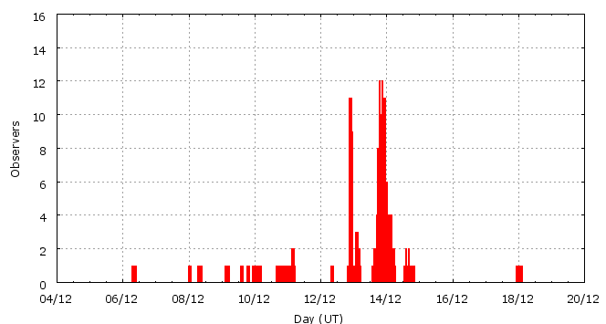

This page shows automated results of the Geminids 2008, based on visual data entered through the IMO electronic report form. Note that these automated results may not be suitable for scientific use; please refer to manual analysis results published in journal papers (e.g., WGN) when available. Send your feedback regarding this page to Geert Barentsen.
Page generated: 2009 January 2 at 4:00 UT.
Note that strong disturbance of the Moon likely led to overestimated Geminid ZHRs in 2008.
ZHRmax = 139 based on 1470 Geminids in 225 data intervals, assuming fixed population index r = 2.0 and zenith correction 1/sin(hR).

| Time (UT) | Solarlon | nINT | nGEM | ZHR | |
|---|---|---|---|---|---|
| 2008-12-06 08:09 | 254.460 | 2 | 1 | 3 | ±2 |
| 2008-12-08 03:08 | 256.279 | 7 | 5 | 4 | ±2 |
| 2008-12-09 12:24 | 257.687 | 4 | 12 | 10 | ±3 |
| 2008-12-10 04:47 | 258.380 | 6 | 22 | 9 | ±2 |
| 2008-12-10 23:54 | 259.189 | 11 | 49 | 14 | ±2 |
| 2008-12-12 23:08 | 261.190 | 14 | 65 | 30 | ±4 |
| 2008-12-13 03:12 | 261.362 | 13 | 62 | 56 | ±7 |
| 2008-12-13 09:48 | 261.641 | 13 | 66 | 51 | ±6 |
| 2008-12-13 20:00 | 262.074 | 8 | 69 | 66 | ±8 |
| 2008-12-13 21:22 | 262.132 | 4 | 87 | 101 | ±11 |
| 2008-12-13 22:03 | 262.161 | 26 | 192 | 113 | ±8 |
| 2008-12-13 22:58 | 262.200 | 29 | 214 | 98 | ±7 |
| 2008-12-13 23:56 | 262.241 | 25 | 226 | 113 | ±8 |
| 2008-12-14 01:02 | 262.287 | 16 | 97 | 111 | ±11 |
| 2008-12-14 02:00 | 262.328 | 13 | 115 | 139 | ±13 |
| 2008-12-14 02:59 | 262.369 | 13 | 106 | 132 | ±13 |
| 2008-12-14 06:08 | 262.503 | 16 | 68 | 56 | ±7 |
| 2008-12-14 19:45 | 263.080 | 2 | 13 | 36 | ±10 |
| 2008-12-18 00:45 | 266.344 | 3 | 1 | 1 | ±1 |
For each estimation interval: time is the middle of the interval, nINT is the number of observing periods and nGEM is the number of Geminids involved. ZHR = (1 + sum nGEM) / sum(Teff/C) where Teff is the effective observing time and C is the total correction for limiting magnitude, clouds and zenith correction. The solar longitudes refer to equinox J2000.0.
ZHRmax = 192 based on 1232 Geminids in 157 data intervals, assuming fixed population index r = 2.0 and zenith correction 1/sin(hR).

| Time (UT) | Solarlon | nINT | nGEM | ZHR | |
|---|---|---|---|---|---|
| 2008-12-13 18:25 | 262.007 | 5 | 45 | 63 | ±9 |
| 2008-12-13 19:46 | 262.064 | 5 | 44 | 63 | ±9 |
| 2008-12-13 20:44 | 262.105 | 5 | 61 | 79 | ±10 |
| 2008-12-13 21:31 | 262.138 | 3 | 54 | 110 | ±15 |
| 2008-12-13 21:48 | 262.150 | 10 | 65 | 107 | ±13 |
| 2008-12-13 22:12 | 262.167 | 12 | 100 | 125 | ±12 |
| 2008-12-13 22:33 | 262.182 | 10 | 100 | 105 | ±10 |
| 2008-12-13 22:50 | 262.194 | 9 | 58 | 94 | ±12 |
| 2008-12-13 23:11 | 262.209 | 9 | 50 | 93 | ±13 |
| 2008-12-13 23:32 | 262.224 | 11 | 87 | 113 | ±12 |
| 2008-12-13 23:50 | 262.236 | 8 | 95 | 114 | ±12 |
| 2008-12-14 00:07 | 262.248 | 6 | 48 | 137 | ±20 |
| 2008-12-14 00:30 | 262.264 | 6 | 40 | 94 | ±15 |
| 2008-12-14 00:54 | 262.281 | 7 | 43 | 114 | ±17 |
| 2008-12-14 01:17 | 262.298 | 7 | 40 | 110 | ±17 |
| 2008-12-14 01:43 | 262.316 | 6 | 42 | 116 | ±18 |
| 2008-12-14 02:13 | 262.337 | 6 | 60 | 149 | ±19 |
| 2008-12-14 02:33 | 262.351 | 4 | 48 | 192 | ±27 |
| 2008-12-14 02:54 | 262.366 | 5 | 41 | 139 | ±21 |
| 2008-12-14 03:23 | 262.387 | 7 | 40 | 101 | ±16 |
| 2008-12-14 04:29 | 262.433 | 11 | 40 | 54 | ±8 |
| 2008-12-14 16:13 | 262.930 | 5 | 31 | 43 | ±8 |
For each estimation interval: time is the middle of the interval, nINT is the number of observing periods and nGEM is the number of Geminids involved. ZHR = (1 + sum nGEM) / sum(Teff/C) where Teff is the effective observing time and C is the total correction for limiting magnitude, clouds and zenith correction. The solar longitudes refer to equinox J2000.0.
Data has been received from 40 observers in 17 countries. Thank you for your efforts!

| Observer | Country | Teff | nGEM |
|---|---|---|---|
| Salvador Aguirre | Mexico | 1.30h | 3 |
| Mina Alizadeh | Iran | 2.17h | 41 |
| Karl Antier | France | 1.00h | 8 |
| Sergey Belan | Ukraine | 1.10h | 2 |
| Sushrut Bhanushali | India | 3.00h | 67 |
| Anna Brylyakova | Ukraine | 1.10h | 3 |
| Sietse Dijkstra | Netherlands | 8.37h | 206 |
| Jaroslaw Dygos | Poland | 1.25h | 27 |
| Wei Ge | China | 1.00h | 5 |
| William Godley | United States | 1.25h | 10 |
| Oleg Gorlatenko | Ukraine | 1.10h | 6 |
| Wayne T. Hally | United States | 6.90h | 43 |
| Carl Johannink | Netherlands | 1.25h | 32 |
| Kshitija Kelkar | India | 1.50h | 35 |
| Jakub Koukal | Czech Republic | 21.75h | 152 |
| Jakub Koukal | Czech Republic | 4.00h | 25 |
| Sumedh Kulkarni | India | 3.00h | 59 |
| Marina Kychyzhyyeva | Ukraine | 1.10h | 9 |
| Peter Van Leuteren | Netherlands | 8.35h | 255 |
| Anna S. Levina | Israel | 1.34h | 15 |
| Minghui Liang | China | 2.64h | 13 |
| Jer Nan Lou | Taiwan | 1.05h | 6 |
| Qiang Ma | China | 2.00h | 31 |
| Koen Miskotte | Netherlands | 3.62h | 117 |
| Mohammad Nilforoushan | Iran | 1.00h | 34 |
| Daniel Van Os | Netherlands | 4.45h | 183 |
| Anna Pavlova | Ukraine | 1.10h | 3 |
| Ekaterina Prihod'ko | Ukraine | 1.10h | 6 |
| Tushar Purohit | India | 2.75h | 58 |
| Ella Ratz | Israel | 1.33h | 10 |
| Jurgen Rendtel | Germany | 1.50h | 6 |
| Ivan M. Sergey | Belarus | 2.73h | 56 |
| Alisa Shurova | Ukraine | 1.10h | 2 |
| Rafael Ruben Torregrosa Soler | Spain | 1.27h | 4 |
| Erwin Van Ballegoy | Netherlands | 1.33h | 13 |
| Michel Vandeputte | Belgium | 7.00h | 61 |
| Li Xue | China | 5.5h | 43 |
| Quanzhi Ye | China | 0.66h | 9 |
| Weizhou Zeng | China | 0.62h | 14 |
| Xiang Zhan | China | 2.29h | 27 |
Create your own analysis!
Rate intervals: gem2008_rate.csv (CSV-format).
Magnitude distributions: gem2008_magn.csv (CSV-format).